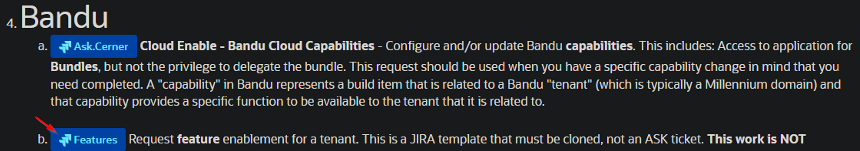
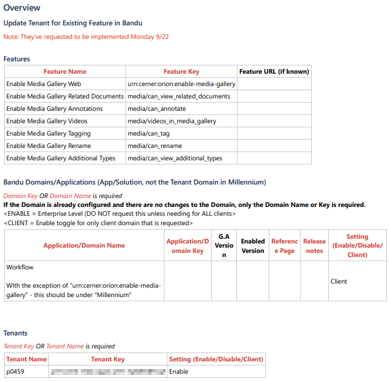

BACKGROUND
These instructions are for logging Feature Toggle requests
Current as of: 2025/09/10 13:25
STEPS
Select "Features" under "Bandu" from this list to log the request to Cloud Enablement:
Request Service for Cloud / Bandu

Fill out all the required fields.
The Feature Name/Key's will be referenced from Configure the Media Gallery Cloud Component.
DOMAIN NAME/KEY
For "Domain Name" and "Domain Key", these will not be specific to client. You can find them in Cerner Central.
They should all be under "Workflow", with the exception of "urn:cerner:orion:enable-media-gallery" which will be under Millennium
EXAMPLES
JIRA Example (UK) JIRA Example (UK PROD)